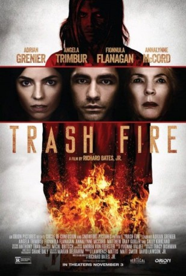

#6260 Trash Fire
 
 IMDB-Wertung: 5.9 / 10
IMDB-Wertung: 5.9 / 10  Tomatometer: 71
Tomatometer: 71  Metascore: 0
Metascore: 0 
The obnoxious, cynical and sarcastic web designer Owen lives with his girlfriend Isabelle. Owen has analysis with his psychiatrist Florence since he feels guilty for the fire that killed his parents and deformed his sister Pearl. When Isabelle discloses that she is pregnant, she asks Owen to make up with his only family composed by his estranged grandmother Violet and Pearl. Owen warns Isabelle that Violet is a nasty woman, but they travel to his hometown. They learn that Violet is a despicable woman that keeps Beatrice locked in her room. Isabelle realizes that Owen has told the truth about Violet, but they stay for a couple of days more because of Pearl with tragic consequences.
Jahr: 2016
Dauer: 93 Minuten
FSK:
Land: USA Studio: Orion PicturesTonspuren: DTS - ,
Untertitel:
Auflösung: 1080p (1920x808) Größe: 4290 MB
Genre: Horror, Komödie, Liebe
Regisseur: Richard Bates Jr.
Drehbuch: Stuart Ross Fink
Soundtrack:
Darsteller:
 Adrian Grenier als Owen
Adrian Grenier als Owen- Angela Trimbur als Isabel
 Fionnula Flanagan als Violet
Fionnula Flanagan als Violet AnnaLynne McCord als Pearl
AnnaLynne McCord als Pearl Sally Kirkland als Florence
Sally Kirkland als Florence Matthew Gray Gubler als Caleb
Matthew Gray Gubler als Caleb Ezra Buzzington als Pastor Sterling
Ezra Buzzington als Pastor Sterling- Molly McCook als Aimee
 Ray Santiago als Sheldon
Ray Santiago als Sheldon Michael Laren als Photographer
Michael Laren als Photographer- Clayton Jackson als Colton
- Alexa Hamilton als Owen's Mother
- Brayden Austin als Young Owen
- Ruby Lightfoot als Young Pearl
- Sibyl Gregory als Chloe
- Ronnie Gene Blevins als Televangelist
- Shane Brady als Diner Waiter #1
- Alex Frew als Diner Waiter #2
- Greg Dehm als Additional Televangelist
- Paul Fahrenkopf als Additional Televangelist
- Karl Schott als Owen's Father
- Mish Way als Bartender
- Devin Herbers als Restaurant Waiter #1
- Daniel O'Sullivan als Restaurant Waiter #2
- Howie H. Howdink als Additional Televangelist
- Austin Barber als Additional Televangelist
- James D. Lynch als Additional Televangelist
- William Shaeffer als Additional Televangelist
Datei: X:\2016(N-Z)\Trash Fire (2016, FSK, 1920x808).mkv seit 23.05.2017
Festplatte: HD 2016(A-Z)
 Es gibt insgesamt 182 Filme in der Gruppe '2016(N-Z)'
Es gibt insgesamt 182 Filme in der Gruppe '2016(N-Z)'